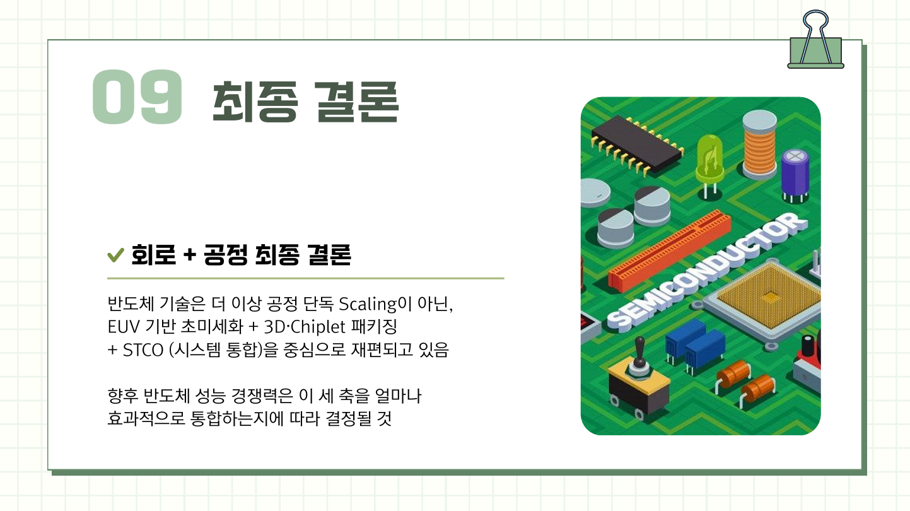
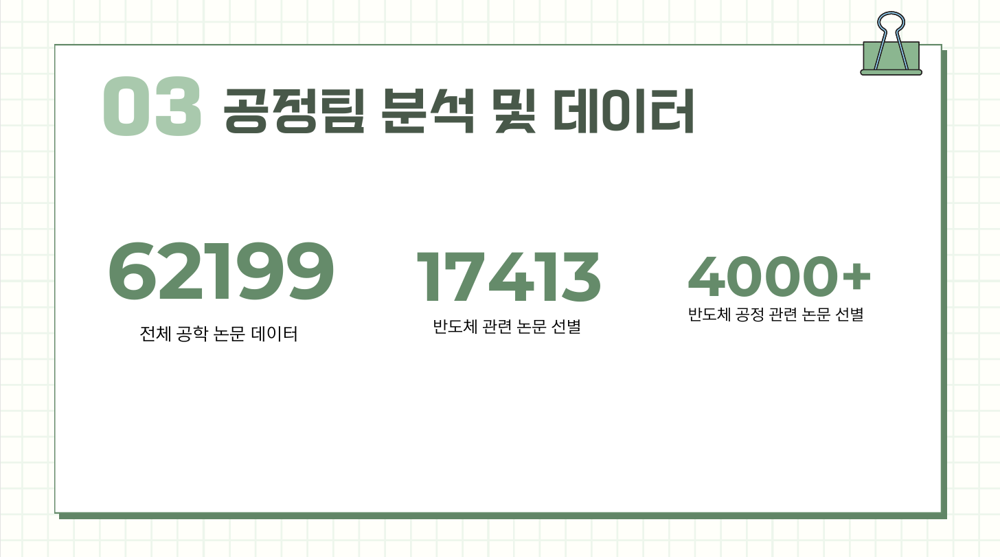
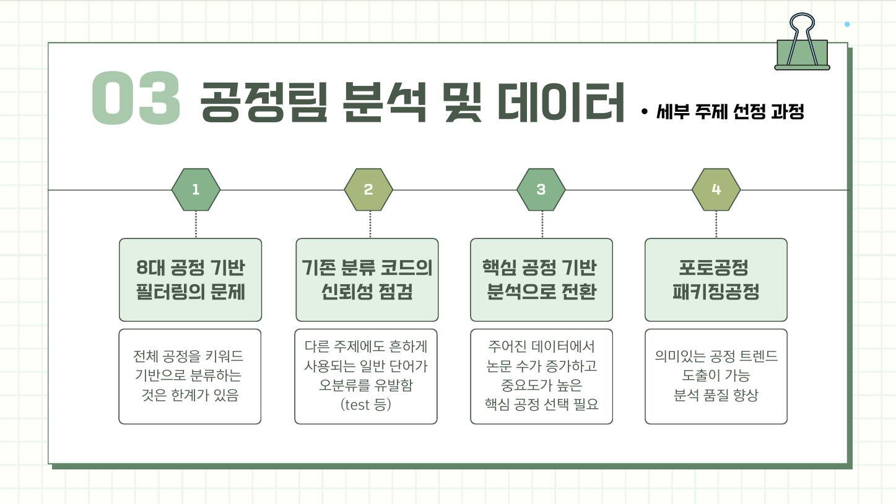
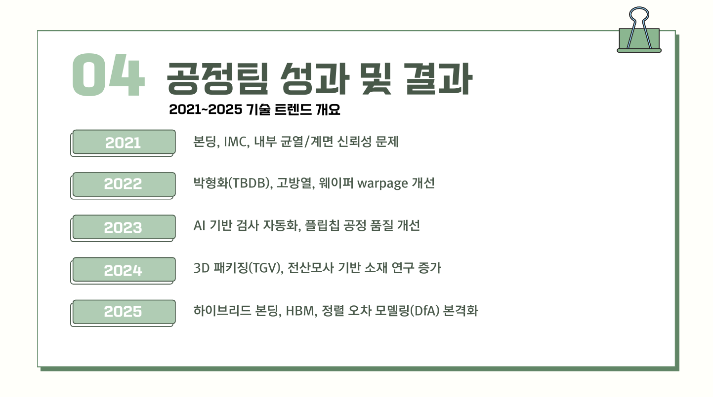

62,199
Engineering papers
Semiconductor Technology Trend Analysis
62,199건의 공학 논문에서 반도체 관련 문헌을 분류하고, false positive를 직접 검증한 뒤 Photolithography와 Advanced Packaging 중심으로 분석 전략을 전환한 팀 프로젝트입니다.

01 / OVERVIEW
전체 62,199건의 공학 논문 중 17,413건을 반도체 관련 문헌으로 분류했고, 공정 관련 키워드로 4,000건 이상을 추렸습니다. 단순 키워드 집계가 기술 트렌드를 왜곡할 수 있다는 점을 검증하면서 분류 체계를 재설계했습니다.
Engineering papers
Semiconductor-related papers
Process-related papers
02 / METHOD
Python, pandas, 정규표현식으로 공학 → 반도체 → 공정 관련 문헌을 단계적으로 분류했습니다.
‘test’ 같은 일반 단어가 포함된 false positive를 확인해 단순 빈도 해석의 한계를 검증했습니다.
분석 범위를 Photolithography와 Advanced Packaging으로 좁혀 기술 흐름을 재분석했습니다.

전체 공학 논문에서 분석 대상이 되는 문헌을 단계적으로 추렸습니다.

false positive를 확인한 뒤 분석 범위를 구체 기술로 좁혔습니다.
03 / RESULTS
검증되지 않은 키워드 빈도를 그대로 결론으로 사용하지 않고, Photolithography와 Advanced Packaging으로 범위를 좁힌 분석을 최종 발표에 반영했습니다. 이 과정 자체가 프로젝트의 핵심 의사결정이었습니다.

담당 기술 영역의 연도별 연구 흐름을 정리했습니다.
검증된 범위에서 공정 기술 흐름을 통합했습니다.
04 / FILES
README, notebooks, filtered data, weekly reports
VIEW GITHUB REPOSITORY ↗분류 과정과 반도체 기술 트렌드 결론
VIEW PRESENTATION PDF ↗공정 분류 및 트렌드 분석 코드
VIEW NOTEBOOK ↗주차별 분석 과정과 의사결정은 저장소에서 확인할 수 있습니다.
VIEW PROJECT FILES ↗